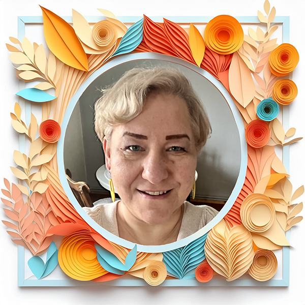
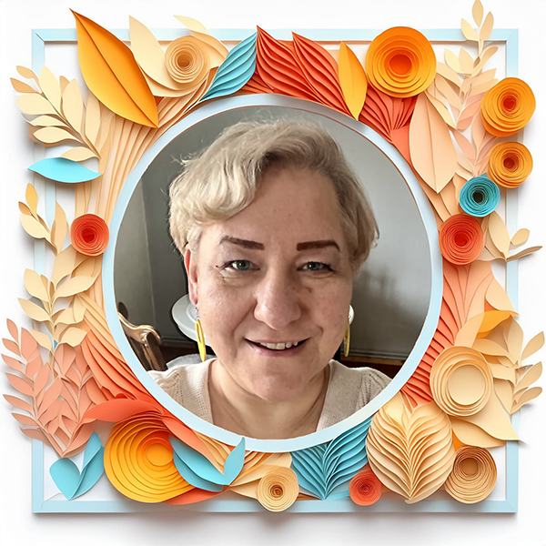

Gabinet Terapii oraz Sesji Coaching'owych
Jestem przekonana, że każdy człowiek może odnaleźć „swojego” terapeutę. Chodzi o to, aby czuć się bezpiecznie i pozostać w relacji niosącej nadzieję.
O mnie
Weronika Socha - instruktor terapii uzależnień, psychoonkolog, coach zdrowia, socjolog. Pomagam w odnalezieniu spokoju, równowagi wewnętrznej, poczucia bezpieczeństwa, wzmocnieniu poczucia własnej wartości, budowaniu asertywności i pewności siebie oraz zmianie przekonań i nawyków. Od lat pracuję z emocjami człowieka. Moimi klientami są głównie osoby uzależnione i ich bliscy (osoby współuzależnione, DDA - Dorosłe Dzieci Alkoholików) oraz DDD - Dorosłe Dzieci Dysfunkcyjne.
Od lat pracuję z emocjami człowieka. Moimi klientami są głównie osoby uzależnione i ich bliscy (osoby współuzależnione, DDA - Dorosłe Dzieci Alkoholików) oraz DDD - Dorosłe Dzieci Dysfunkcyjne.
 

Jestem autorką poradnika dla kobiet „Odważ się i sięgnij po więcej”. Stworzyłam 10 wymogów, których spełnienie wręcz gwarantuje zaakceptowanie i pokochanie siebie, oraz 10 zasad inteligencji duchowej - zasad, które pozwalają spokojniej i łatwiej żyć w środku cyklonu, jakim jest dzisiejszy świat.
Odwiedź mnie na Facebook'uSpecjalizacje i ceny
Terapia, sesje coaching'owe, konsultacje zarówno w gabinecie, jak i online. Pracuję w systemie spotkań cotygodniowych, gdzie pierwsze spotkanie to czas dla wzajemnego poznania się, przybliżenia zasad współpracy, oraz podjęcia decyzji o rozpoczęciu np. terapii. Prowadzę również grupy terapeutyczne oraz warsztaty rozwojowe dla kobiet.
Terapia dla osób uzależnionych od alkoholu
spotkania minimum 2 razy w tygodniu
Sesja 45 minut - 150 zł
Terapia dla rodzin osób uzależnionych
(osoby współuzależnione, DDA)
spotkania raz w tygodniu
Sesja 60 minut - 200 zł
Terapia dla DDD - Dorosłe Dziecko Dysfunkcyjne
(rozwiązywanie bieżących problemów emocjonalnych)
spotkania raz w tygodniu
Sesja 60 minut - 200 zł
Praca z osobami chorymi onkologicznie i ich rodzinami
spotkania w zależności od potrzeb
Sesja 60 minut - 200 zł
Kontakt
Adres gabinetu:
Przychodnia Vita - Med.
ul. Podchorążych 4
58-100 Świdnica
Dane do przelewu i faktury:
Akademia Zdrowia Ukryte Skrzydła Weronika Socha
ul. Wrocławska 70/5
58-100 Świdnica
NIP 913-109-19-18
Nr konta: 56 1160 2202 0000 0005 5518 1915